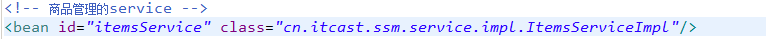

本文主要介绍spring mvc框架和mybatis框架的整合，二者一起开发出一个简单的商品订单系统。
8 springmvc和mybatis整合
8.1 需求
使用springmvc和mybatis完成商品列表查询。
8.2 整合思路
springmvc+mybaits的系统架构：
第一步：整合dao层
mybatis和spring整合，通过spring管理mapper接口。
使用mapper的扫描器自动扫描mapper接口在spring中进行注册。
第二步：整合service层
通过spring管理 service接口。
使用配置方式将service接口配置在spring配置文件中。
实现事务控制。
第三步：整合springmvc
由于springmvc是spring的模块，不需要整合。
8.3 准备环境
数据库环境：mysql5.1
java环境：
jdk1.7.0_72
Intellij IDEA
springmvc版本：spring3.2
所需要的jar包：
数据库驱动包：mysql5.1
mybatis的jar包
mybatis和spring整合包
log4j包
dbcp数据库连接池包
spring3.2所有jar包
jstl包
参考：
工程结构：
8.4 整合dao
mybatis和spring进行整合。
8.4.1 sqlMapConfig.xml
mybatis自己的配置文件。
8.4.2 applicationContext-dao.xml
配置：
数据源
SqlSessionFactory
mapper扫描器
8.4.3 逆向工程生成po类及mapper(单表增删改查)
将生成的文件拷贝至工程 中。
8.4.4 手动定义商品查询mapper
针对综合查询mapper，一般情况会有关联查询，建议自定义mapper
8.4.4.1 ItemsMapperCustom.xml
sql语句：SELECT * FROM items WHERE items.name LIKE '%笔记本%'
8.4.4.2 ItemsMapperCustom.java
8.5 整合service
让spring管理service接口。
8.5.1 定义service接口
8.5.2 在spring容器配置service(applicationContext-service.xml)
创建applicationContext-service.xml，文件中配置service。

8.5.3 事务控制(applicationContext-transaction.xml)
在applicationContext-transaction.xml中使用spring声明式事务控制方法。
8.6 整合springmvc
8.6.1 springmvc.xml
创建springmvc.xml文件，配置处理器映射器、适配器、视图解析器。
8.6.2 配置前端控制器
参考入门程序。
8.6.3 编写Controller(就是Handler)
8.6.4 编写jsp
8.7 加载spring容器
将mapper、service、controller加载到spring容器中。
建议使用通配符加载上边的配置文件。
在web.xml中，添加spring容器监听器，加载spring容器。
9 商品修改功能开发
9.1 需求
操作流程：
1、进入商品查询列表页面
2、点击修改，进入商品修改页面，页面中显示了要修改的商品（从数据库查询）
要修改的商品从数据库查询，根据商品id(主键)查询商品信息
3、在商品修改页面，修改商品信息，修改后，点击提交
9.2 开发mapper
mapper：
根据id查询商品信息
根据id更新Items表的数据
不用开发了，使用逆向工程生成的代码。
9.3 开发service
接口功能：
根据id查询商品信息
修改商品信息
9.4 开发controller
方法：
商品信息修改页面显示
商品信息修改提交
10 @RequestMapping
- url映射
定义controller方法对应的url，进行处理器映射使用。
窄化请求映射
限制http请求方法
出于安全性考虑，对http的链接进行方法限制。
如果限制请求为post方法，进行get请求，报错：
11 controller方法的返回值
返回ModelAndView
需要方法结束时，定义ModelAndView，将model和view分别进行设置。返回string
如果controller方法返回string，
1、表示返回逻辑视图名。
真正视图(jsp路径)=前缀+逻辑视图名+后缀
2、redirect重定向
商品修改提交后，重定向到商品查询列表。
redirect重定向特点：浏览器地址栏中的url会变化。修改提交的request数据无法传到重定向的地址。因为重定向后重新进行request（request无法共享）
3、forward页面转发
通过forward进行页面转发，浏览器地址栏url不变，request可以共享。
- 返回void
在controller方法形参上可以定义request和response，使用request或response指定响应结果：
12 参数绑定
12.1 spring参数绑定过程
从客户端请求key/value数据，经过参数绑定，将key/value数据绑定到controller方法的形参上。
springmvc中，接收页面提交的数据是通过方法形参来接收。而不是在controller类定义成员变量接收！！！！
12.2 默认支持的类型
直接在controller方法形参上定义下边类型的对象，就可以使用这些对象。在参数绑定过程中，如果遇到下边类型直接进行绑定。
1.2.1.1 HttpServletRequest
通过request对象获取请求信息
1.2.1.2 HttpServletResponse
通过response处理响应信息
1.2.1.3 HttpSession
通过session对象得到session中存放的对象
1.2.1.4 Model/ModelMap
model是一个接口，modelMap是一个接口实现 。
作用：将model数据填充到request域。
12.3 简单类型
通过@RequestParam对简单类型的参数进行绑定。
如果不使用@RequestParam，要求request传入参数名称和controller方法的形参名称一致，方可绑定成功。
如果使用@RequestParam，不用限制request传入参数名称和controller方法的形参名称一致。
通过required属性指定参数是否必须要传入，如果设置为true，没有传入参数，报下边错误：
参考教案 对其它简单类型绑定进行测试。
12.4 pojo绑定
页面中input的name和controller的pojo形参中的属性名称一致，将页面中数据绑定到pojo。
页面定义：
controller的pojo形参的定义：
12.5 自定义参数绑定实现日期类型绑定
对于controller形参中pojo对象，如果属性中有日期类型，需要自定义参数绑定。
将请求日期数据串转成 日期类型，要转换的日期类型和pojo中日期属性的类型保持一致。
所以自定义参数绑定将日期串转成java.util.Date类型。
需要向处理器适配器中注入自定义的参数绑定组件。
12.5.1 自定义日期类型绑定
12.5.2 配置方式
13 springmvc和struts2的区别
1、springmvc基于方法开发的，struts2基于类开发的。
springmvc将url和controller方法映射。映射成功后springmvc生成一个Handler对象，对象中只包括了一个method。
方法执行结束，形参数据销毁。
springmvc的controller开发类似service开发。
2、springmvc可以进行单例开发，并且建议使用单例开发，struts2通过类的成员变量接收参数，无法使用单例，只能使用多例。
3、经过实际测试，struts2速度慢，在于使用struts标签，如果使用struts建议使用jstl。
14 问题
14.1 post乱码
在web.xml添加post乱码filter
在web.xml中加入：
以上可以解决post请求乱码问题。
对于get请求中文参数出现乱码解决方法有两个：
修改tomcat配置文件添加编码与工程编码一致，如下：
<Connector URIEncoding="utf-8" connectionTimeout="20000" port="8080" protocol="HTTP/1.1" redirectPort="8443"/>
另外一种方法对参数进行重新编码：String userName new
String(request.getParamter("userName").getBytes("ISO8859-1"),"utf-8")
ISO8859-1是tomcat默认编码，需要将tomcat编码后的内容按utf-8编码